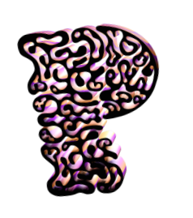
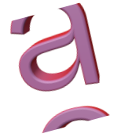
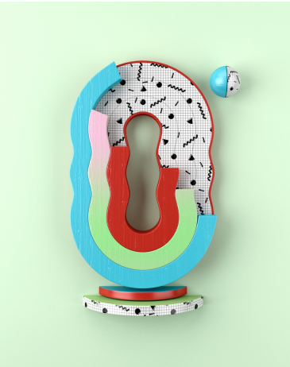
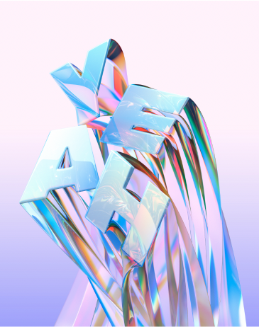
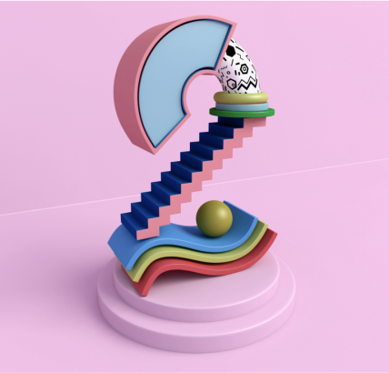
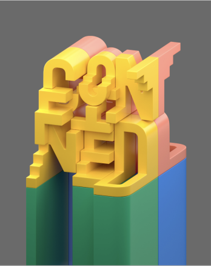

Леттеринг в 3D
Опубликовано
22 декабря 2022

“the joy of three-
dimensional typography”
 

Muokkaa (Álex López)
Что это такое?
Трехмерная типография – это то, с чем мы часто сталкиваемся в последнее время, и, похоже,
она тоже не угасает. В этом посте представлена огромная коллекция 3D-типографии,
и мынисколько не сомневаемся,
что она будет вдохновлять!


Muokkaa (Álex López)
«Играйте с цветами, размером, стилем
или размещением, чтобы сделать ваш
3D-текст легким для понимания
и вызвать все нужные эмоции»
Создание
Итак, как создается эта великолепная
типография? На самом деле существует
несколько способов, и правильная часть
программного обеспечения выбирается
в зависимости от того, какой внешний вид
вы хотите использовать.



Muokkaa (Álex López)
Программное обеспечение для редактирования
3D, такое как Maya или Cinema 4D, используется
для создания визуализированных фигур,
благодаря чему ваша типография выглядит так,
как будто каждая фигура является реальным
объектом, как в первых двух примерах ниже.
Muokkaa (Álex López)